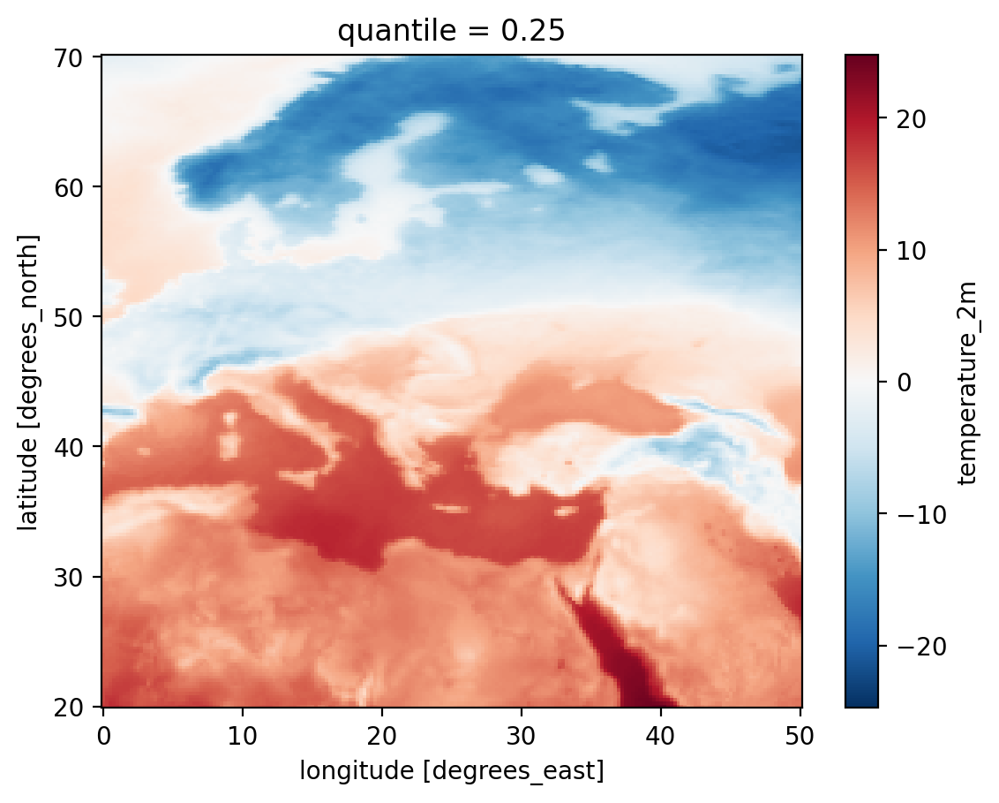
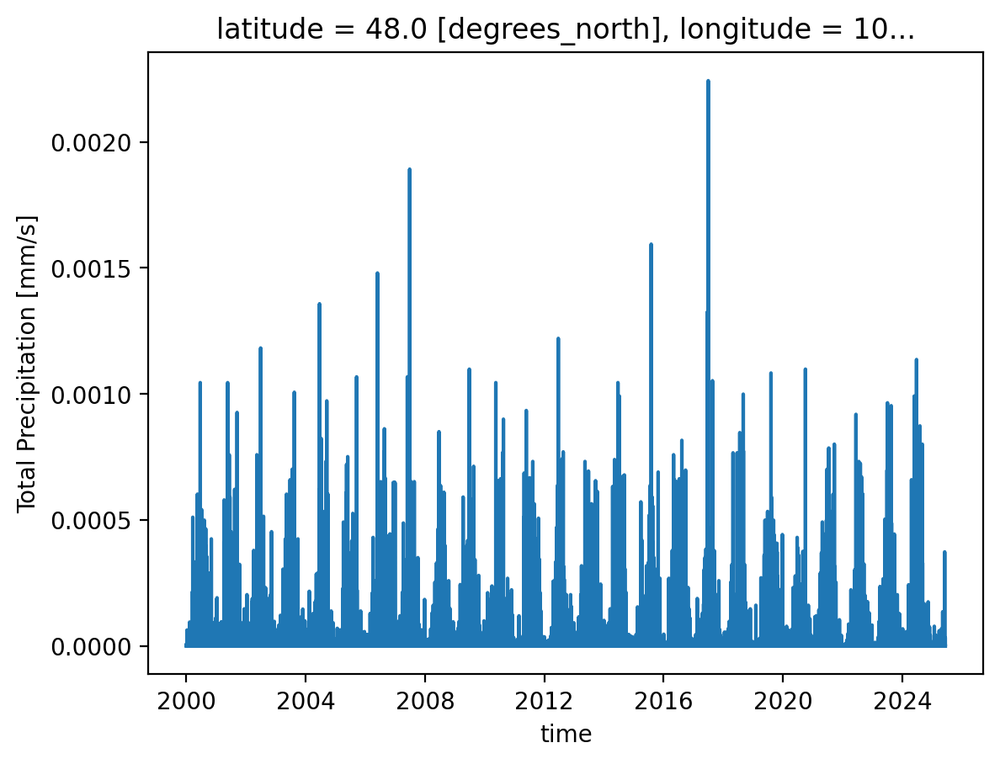

Weather data is hard to work with. What if it wasn't?
ds = xr.open_zarr("https://data.dynamical.org/noaa/gefs/forecast-35-day/latest.zarr")
(
ds["temperature_2m"]
.sel(init_time="2025-01-01T00")
.sel(lead_time="7d")
.sel(latitude=slice(70, 20), longitude=slice(0, 50))
.quantile(0.25, dim="ensemble_member")
.plot()
)
ds = xr.open_zarr("https://data.dynamical.org/noaa/gefs/forecast-35-day/latest.zarr")
(
ds["temperature_2m"]
.sel(init_time="2025-01-01T00")
.sel(lead_time="7d")
.sel(latitude=slice(70, 20), longitude=slice(0, 50))
.quantile(0.25, dim="ensemble_member")
.plot()
)

ds = xr.open_zarr("https://data.dynamical.org/noaa/gefs/analysis/latest.zarr")
ds["precipitation_surface"].sel(latitude=47.9, longitude=106.9, method="nearest").plot()
ds = xr.open_zarr("https://data.dynamical.org/noaa/gefs/analysis/latest.zarr")
ds["precipitation_surface"] \
.sel(latitude=47.9, longitude=106.9, method="nearest") \
.plot()
